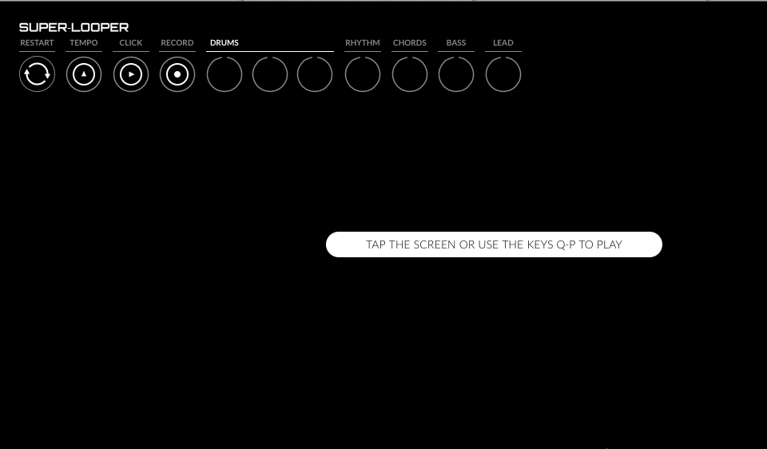
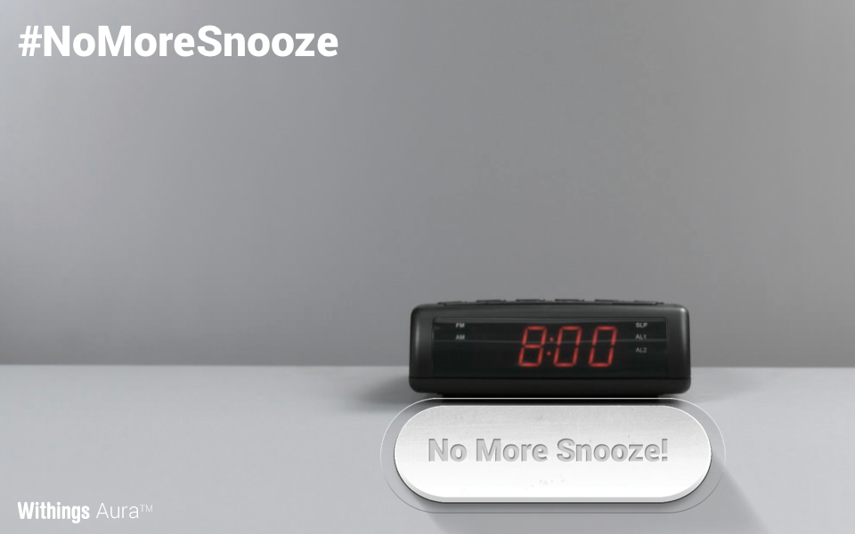
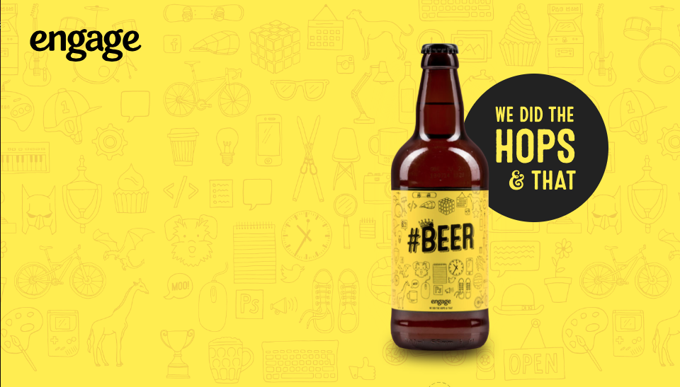

Raffael Stueken

This site shows some selected projects of Raffael Stueken. It is a reduced and simple website in which selected projects are primarily represented, and the navigation system is hidden. Hovering over the main object will trigger the navigation. The hidden navigation reduce distraction from viewing projects.
Super-Looper

SUPER-LOOPER is a cool and fun music making app. Shaped by the sounds of the ‘80s, SUPER-LOOPER brings retro electronic music composition to the desktop and iPad. Users can record short loops with each of the eight layers, and combine them to produce seamless looping tracks.
NoMoreSnooze

Withings Aura™ presents #NoMoreSnooze. Alarm clock is the most hated thing in the world. Every morning it sounds like an enemy. Wake up! It's time for revenge!
engage

The beer bottle spin when hover across. The interaction become a intersting introduction to the website, and creates a distinct vibe.
Super Sync Sports

Chrome Super Sync Sport is a new Chrome Experiment that enables you to sync your mobile devices to your computer to run, cycle and swim. The game allows you to select one of 50 avatars and compete with up to three of your friends.